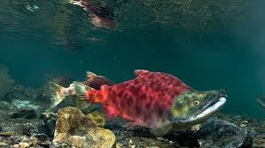
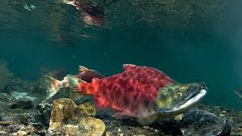

orcas are the Apex preditors of the ocean. The main food that orcas eat is fish. One of the main foods that fish eat is insects such as worms. One of the main foods that insects like to eat is plants.
 
